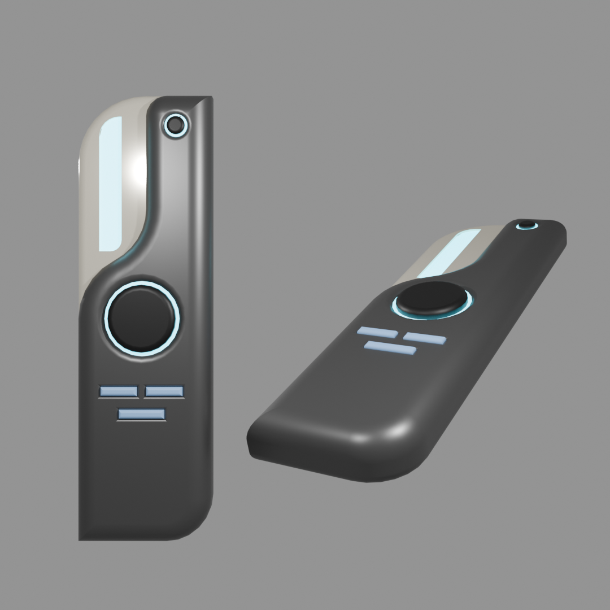
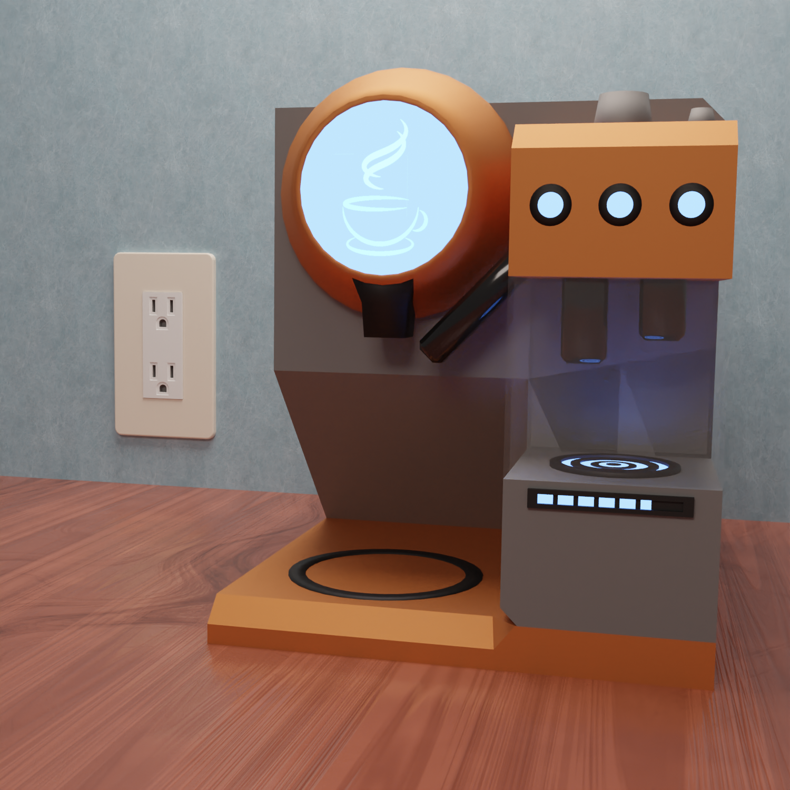
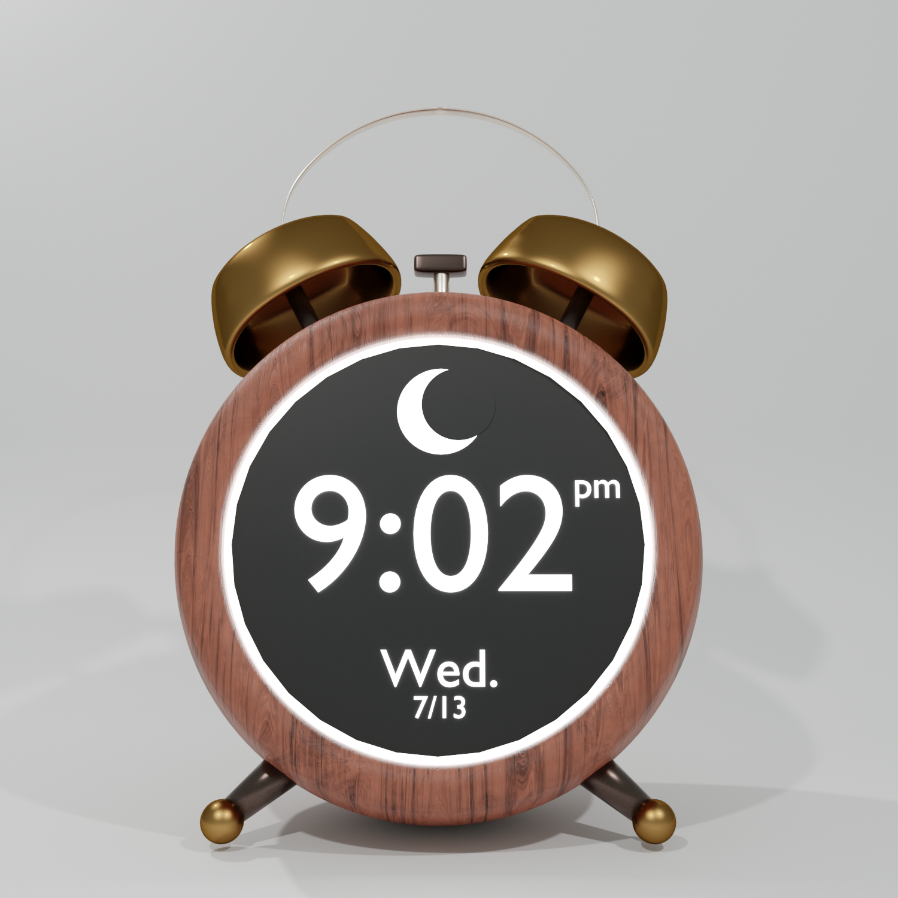
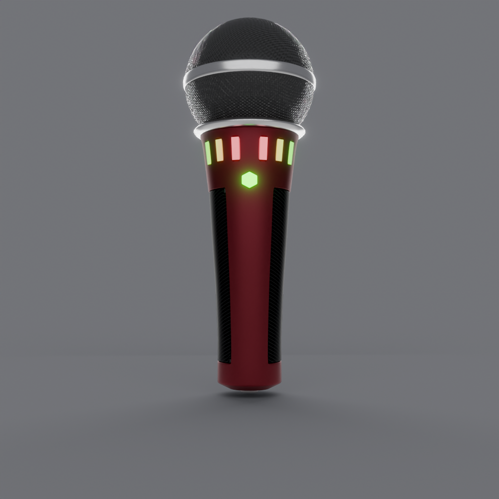
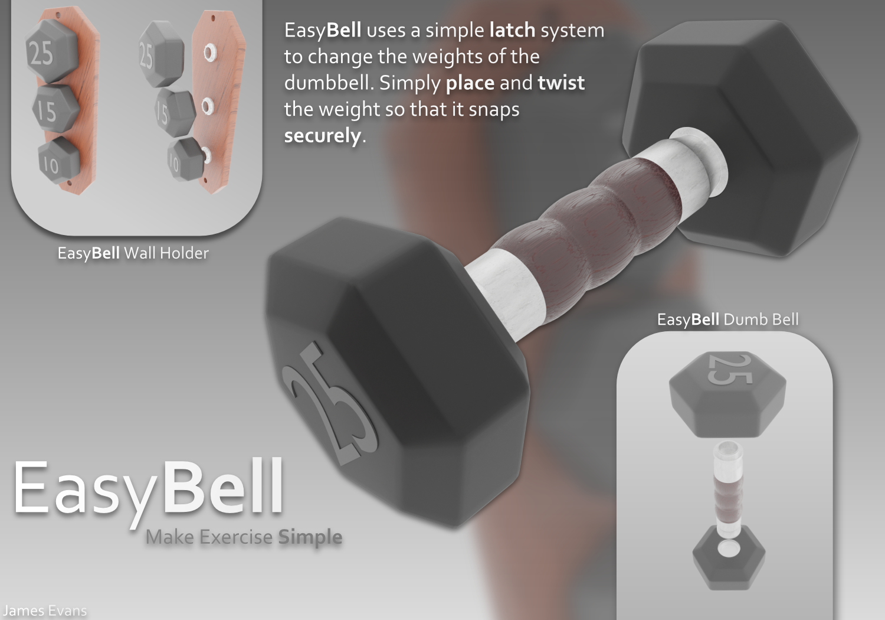

Project Overview
This page showcases a series of small industrial design studies I created out of personal interest. Each project was modeled in 3D to explore form, surface treatment, and usability. While these were not for clients or coursework, they helped me build skills with design tools and think more deeply about the physical experience of using objects.
- Project Type: Personal Industrial Design Studies
- Focus: Everyday Objects, Aesthetic and Functional Concepts
- Tools Used: Blender, Photoshop, Fusion360
Design Explorations
Remote Concept
A minimal futuristic remote designed in Fusion360 and rendered in Blender.
Coffee Maker Concept
A compact coffee maker with a clean geometric layout and digital display features.
Alarm Clock Redesign
A digital alarm clock in a retro analog form. It blends modern UI with a nostalgic shape using wood and brass textures.
Headphones Concept
A soft, matte pair of headphones featuring pastel padding.

Hover over me
Microphone Concept
A microphone that emphasizes grip, lighting feedback, and durability.
Drawer Unit
A retro-futurism styled storage piece with contrasting wood textures and rounded corners. Created as an exercise in furniture visualization.

EasyBell Dumbbell System
A conceptual dumbbell system with detachable weights using a twist-and-lock mechanism. Designed for simplicity and space-saving.
Reflections
- Explored a range of materials and form factors across object types.
- Used 3D modeling to simulate ergonomics, visual hierarchy, and interaction points.
- Gained confidence in bringing physical design ideas to life through rendering and layout.